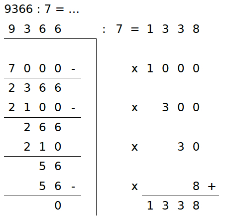

Voorbeeld
Dit is een voorbeeld van het 'delen met happen'. Als je moeite hebt met delen, is dit gemakkelijker dan de staartdeling. Een staartdeling mag natuurlijk ook.

Trek steeds zoveel mogelijk keren 7 van 9366 af:
- 1000 x 7 = 7000
ervan afhalen, 9366 - 7000 = 2366 - 300 x 7 = 2100
ervan afhalen, 2366 - 2100 = 266 - 30 x 7 = 210
ervan afhalen, 266 - 210 = 56 - 8 x 7 = 56
ervan afhalen, 56 - 56 = 0 - In totaal (1000 + 300 + 30 + 8 =) 1338 keer 7 van 9366 af gehaald.
- Antwoord: 9366 : 7 = 1338